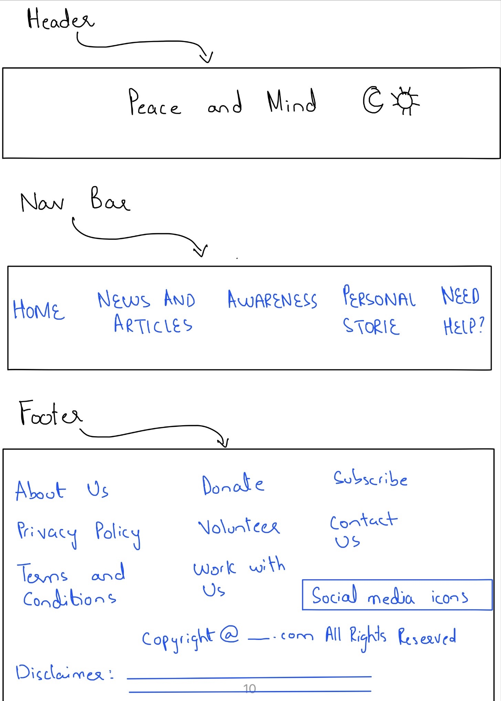
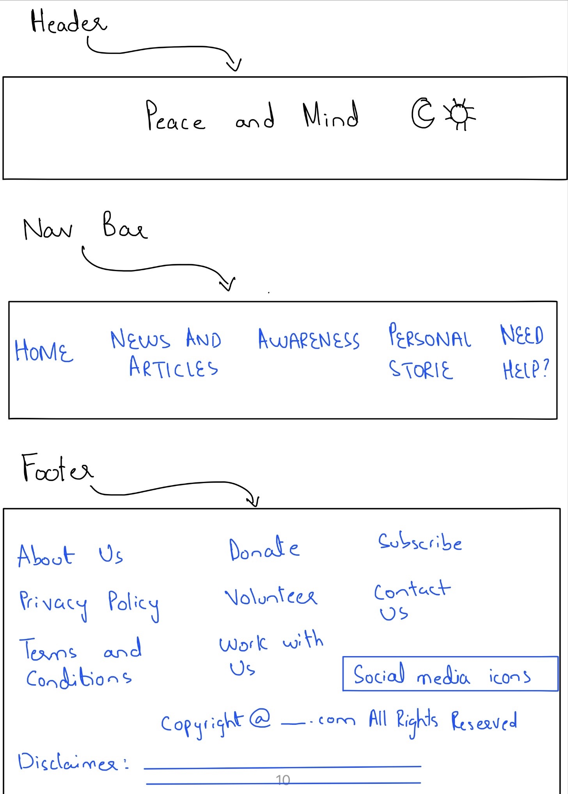

My site “Peace and Mind” revolves around the theme of mental health. Through my website I have tried to highlight the importance of mental health, mental wellbeing and awareness regarding mental illnesses. I tried to provide relevant information , the significance of seeking help and also shared some personal stories of individuals who have gone through some kind of mental illness at some point in their lives. The website also highlights some causes that lead to mental illnesses and how being unhealthy at mind could affect one’s daily life.
The first page “Homepage” gives an overview of the whole website. It has bits and pieces of content of all the other pages.
The second page “News and Articles” shows news and articles regarding mental health.
The third page “Awareness” displays shocking facts and figures about the mental health. It also highlights some mental illnesses, their symptoms, treatments and some ways to seek help.
The fourth page “Personal Stories” tells the personal stories of individuals who have been through mental illness and how they overcame them.
The last page is “Need Help” page which asks for the information of the person seeking any kind of help.
For implememting dark/light mode I have used global varibales and made a "root" div in the css
Each of the page is accessible through the Navigation Bar.
The website has five webpages each of which has different type of content. I have used grid layout to structure the pages, using a separate div for each grid item.
The website is made using Html , CSS and Javascript. The main page is structured in “index.html” and there are separate html files for each of the page.
For styling there is a common CSS file.
Interactivity is implemented through javascript. There are two javascript files which support different interactivities. One is for the slideshow on “Awareness” page which is the third page in the website and the other is to implement Dark Mode throughout the website.
In order to make the website responsive I have used “Media queries”. Media queries define the page layout for tablet and mobile while the default code is for the laptop.
Mental health is a concerning issue in the world these days. More and more people are going through some kind of problem related to mental health. Following things inspired me when I was creating my website.
Accessibility is an important feature of any website. Making a website accessible attracts more and more people to the platform. While making this website I have considered applying accessibility in the following ways:
In order to make the website more user-friendly, usability features are a must to consider when designing the website. I have considered the usability of website in order to attract more users in the following ways:
Making a whole website by myself was a great learning experience for me. I learnt many new things and also tried implementing them in my website.
The process of making the website was a long one, yet an amazing learning experience. I found out new things, learnt about them and contrary to the midterm project it is safe to say that I used far better techniques in structuring my website. Furthermore, making five pages helped me practice the new concepts that I learnt while making this website.
First of all, I think grids worked very well in my website. The type of structure that I wanted for my website, required using columns and I believe usinf grids was a very efficient approach to do so. Using grids allowed me to make as many columns as I wanted, and I could describe the width of each column, which proved very useful in aligning items in grid spaces the way I wanted them to be.
The use of transform and transition properties that I used when news and articles are hovered over was also a success. It gives a pleasing effect and works successfully throughout the website. Before using this property I took help from online sources and video tutorials to understand this css property of transform and translate. I then implemented it a number of times on the website and due to practice it was smooth implementation.
The dark/light mode also works in a successful manner. This feature not only implements the mode as chosen by user but also saves the user’s preference of dark or light mode and implement in on all the pages, even when the website is refreshed or opened after being closed. I used global variables and defined them in the :root div in CSS, which made the working of dark/light mode easy.
The Media Queries were also successful for the widths that I have defined. Again, since I had used grids in my website, implementing media queries was easy and successful.
The Responsive news blog section that I made in “News and Articles” was a success. I used flexbox to implement it so whenever the screen is resized it is not distorted but the flex-wrap property aligns each article in a vertical manner when the space is less.
Hence, using these techniques prevented my webpages from being distorted and kept the elements in their allocated spaces even if the screen is resized.
I had some issues while making the footer for the website. Even though it looks fine I would like to make it better the next time. I am not very clear about the property to use to style different columns within a footer. I will make the footer much better by placing the items in more structured way such as equal spacing between columns, equal spacing from all the four sides and making sure the content within the footer is consistent throughout the webpages.
I also think I can make an improved navigation bar, a navigation bar that is sticky and does not disappear when the user scrolls down.
The webpage “Personal Stories” could have been improved and a different approach could be used to display the personal stories. If I were to make it again, I will make it in a way so that there is not so much text to read side by side. I will display half of the the story , and use “Read More” button to read full story only if the user is interested to read more.
I can also improve the media queries for the website and add more screen sizes to make it responsive for variety of devices.
In the page “Awareness” I have made a slideshow. I think the slideshow that I made could have been improved and made more interactive using javascript in a better way. I would make the slideshow more neat in its look and will make the transition from one slide to another more smooth.
2) Personal Stories
Anonymous Story
Jamie's Story
Anali's Story
3) News and Articles for the Website
Simon Cowell News
Mental illness may affect relationships blog
Childhood abuse leads to physical and mental problems decades later
Social Media usage and Depression
Mental health concern for Manipur children
Does school cause mental illness?
Mental health in the workplace
3) Full Screen Image Slider
Coding with Elias, ‘Full Screen Image Slider with HTML, CSS & JS’
4) Dark Mode / Light Mode
Geek for Geeks, How to make Dark mode for websites using HTML CSS & JS?
GreatStack ,How To Make Website DARK MODE | Dark Theme Website Design Using HTML, CSS & JS
5)Responsive cards
Learn Web, ‘Responsive Blog and News Section With HTML & CSS | Blog Card Design | CSS Grid Layout
6) Pictures for the website
Pixabay
Freepik
7) World Health Organisation, Mental Health report 2022
8) Inspiration from different websites
verywellmind
Head to Health
Calm Sage
psychologies
Mind
11 Tips for Mental Health and Wellbeing
World Mental Health Report
9) Quiz section on main page
calmsage quiz
 
